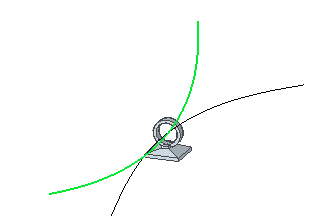
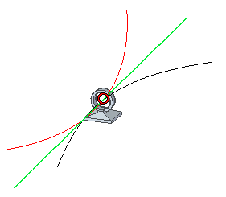
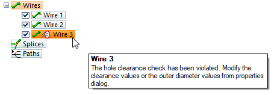
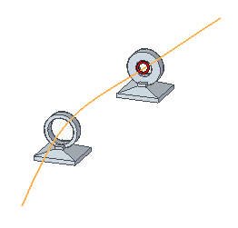
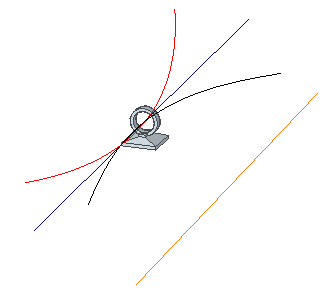
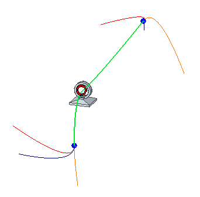
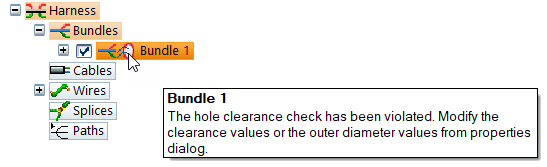
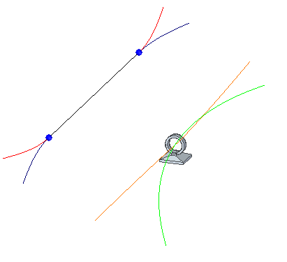
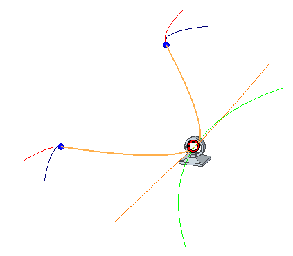

Route command
Use the Route command to reroute an existing wiring or tube path through a circular face on a part. You select the path, and then select the circular face on the part that the path is to pass through. When the path reroute is complete, flip the direction of the path through the circular face by pressing the F key.
The command is available in:
-
Electrical Routing – To enter the application, open an assembly file and then choose the Tools→Environs group→Electrical Routing command.
-
XpresRoute – To enter the application, open an assembly file and choose the Tools→Environs group→XpresRoute command.
Routing wires through fixings with the Wire and Route commands
The Wire and Route commands calculate the total cross sectional area of all wires routed through a fixing. The diameter calculation also includes the Clearance through holes tolerance specified in the Properties dialog box. If the total cross sectional area of all wires is greater than the interior diameter of the fixing, PathFinder indicates a warning message and a red circle appears at the center of the fixing.
The wires should be routed through a fixing, using only the Cylindrical filter in order for the clearance violation calculation to work properly. Other filters, such as Center Point, Center, and End Point are supported, but they are not considered for hole clearance violation calculation.
In the following example, the inner diameter of the hole is 8 mm. There are two wires each have a diameter of 4mm so they can be routed through the hole.

If you route a third wire that violates the clearance a red circle is displayed around the wire that violated the clearance.

PathFinder indicates the wire that violated the clearance and a warning message is displayed.

You can edit the clearance values or the outer diameter value from the Properties dialog box to remove the clearance indicator and warning message.
If you route a wire through multiple holes, the outer diameter is calculated after each hole you are routing through. If the clearance is violated, the red circle is shown at that hole and PathFinder indicates the clearance violation.

Routing bundles through fixings with the Cable, Bundle and Route commands
The Cable, Bundle and Route commands calculate the total cross sectional area of all harness entities routed through a fixing. The calculation also includes the Clearance through holes tolerance specified in the Properties dialog box. If the total cross sectional area of those harness entities is greater than the interior diameter of the fixing, PathFinder indicates a warning message and a red circle appears at the center of the fixing.
The cables or bundles should be routed through a fixing, using only the Cylindrical filter in order for the clearance violation calculation to work properly. Other filters, such as Center Point, Center, and End Point are supported, but they are not considered for hole clearance violation calculation.
In the following example, there are three wires routed through a hole with a fourth wire routed outside the hole.

You can create a bundle consisting of all four wires and route the bundle along a path created through the center of the fixing. In this example, the bundle diameter is greater than the capacity of the hole and a red circle is displayed around the bundle.

PathFinder also indicates the bundle violates the clearance and a warning message is displayed.

You can edit the clearance values or outer diameter value from the Properties dialog box to remove the clearance indicator and warning message.
The following example illustrates an existing bundle consisting of two wires.

The bundle diameter is greater than the capacity of the hole so a red circle is displayed around the bundle.

PathFinder also indicates the bundle violates the capacity of fixing and a warning message is displayed.
Collectively computing the cross sectional area
After the harness entities are routed through a fixing Solid Edge collectively computes the cross sectional area. For example, suppose you have wires and bundles routed through a fixing and then attempt to route a cable through the same fixing. Solid Edge collectively computes the cross sectional area and clearance values of all three entities. After the cable is routed, if the capacity of the fixing is exceeded, a warning message is shown only on the cable. You can modify the outer diameter or clearance of any of the entities to bring the capacity of fixing within range. After you change the value, the cross sectional area recomputes and, if everything is under tolerance, the warning message on the cable goes away.
How do I
Route a harness entity along a surfaceEdit the path of a electrical routing conductor
Construct a path through selected keypoints
Display Properties for a Harness Element
Create a wire
Create a cable
Create a wire harness bundle
Add a splice
Display Harness Elements
Create a harness component solid body
Delete a wire component solid body
Learn more
Creating the electrical routing manuallyCreating harness component solid bodies
Removing conductors
Look up more details
Path commandEdit Path Command
Path command bar
Route along Surface command
Route along Surface command bar
Show All Paths command
Wire command
Wire command bar
Show All Wires command
Hide All Wires command
Wire Properties Command
Cable command
Cable command bar
Show All Cables command
Hide All Cables command
Bundle command
Bundle command bar
Show All Bundles command
Hide All Bundles command
Splice command
Splice command bar
Splice Properties dialog box
Assign Terminals dialog box (Splice)
Create Physical Conductor command
Delete Physical Conductor command
Show Physical Conductor command
Show All Physical Conductors command
Hide Physical Conductor command
Hide All Physical Conductors command
Show All Harnesses command
Hide All Harnesses command
Remove command (Electrical Routing)
PathFinder in electrical routing
Related Topics
Create a bundle across a spliceAdd a wire to a splice
Remove a wire from a splice
Change the splice location
Change splice properties